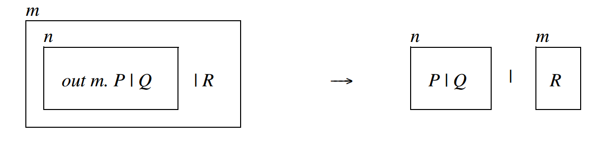
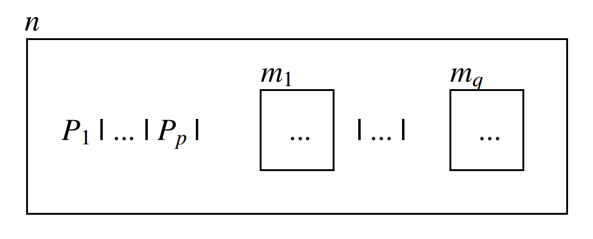

Part 2: Design
This is part two of a two part series where I'll describe an implementation of the ambient calculus in Elixir.
Cool diagram, right? At the beginning of the last part of this series I promised to explain it, so here goes. The right hand side represents two ambients n and m, running programs P, Q and R. The yield arrow just means that the left-hand side reduces to the right-hand, and in particular this diagram shows the semantics of the "out" or "exit" operation, which basically un-nests nested ambients.

In the rest of this part of the series, I'll get into how we'll map ambient calculus primitives on to Elixir primitives in an overview of high-level design decisions. In the next part of this series, I'll begin to get into actual implementation-level stuff.
Distributed Elixir
To keep ourselves true to the "mobile computation" spirit of the Ambient Calculus (and to demonstrate some aspects of distributed Elixir) everything after this point is designed to work with multiple Elixir "nodes" (see the Concurrency Primitives section for an overview of what this means if you're not familiar with the concept of nodes).
But there's a challenge: Elixir nodes don't automatically get connected together and there is a need to put together some kind of discovery/registration process. I've written elsewhere about approaches to clustering in elixir, so I won't go into much detail about that here. Without going down a CAP1 rabbit hole, suffice it to say cluster-membership for the ambient calculus app is done quick and dirty, in the simplest possible way with OpenSLP.
:warning: You'll have to set that up now if you actually want to follow along at home. :warning:
Ambients
From the section discussing ambient properties in our working definition, it's easily possible to sketch an elixir Struct that more or less captures the idea of all the state that makes up what an ambient is.
defmodule AmbientStruct do
defstruct(
name: :"UnknownAmbient", # atom representing this ambient's name
node: :"UnknownNode", # atom representing the Node this ambient resides in
pid: nil, # ambient PID
parent: nil, # parent ambient PID
progman: nil, # progspace manager PID
healthy: true, # bool that's true if all children are healthy
well_behaved: true, # bool that's true if programs in program-space are not crashing
progspace: %{}, # %{ :program_name => task_function }
namespace: %{}, # %{ :var => val }
children: %{}, # %{ :ambient_name => ambient_pid }
)
end
An ambient is not just defined by it's static state though. All this state needs maintenance, and it has to be wrapped in such a way that it can be operated on concurrently. So far, what is known suggests that the wrapper could be implemented with an Elixir Agent, but exactly because of all the things I don't know yet I'll hedge my bets, and opt for more flexibility by implementing the wrapper with a GenServer instead.
Program Spaces
As we've seen from the explanation of the cool diagram from the formal definition, the ambient calculus is full of concurrently executing programs. In Cardelli's notation that would be P1..Pn as you see below.

This is where Elixir really begins to shine. Given the potentially massive number of concurrent programs, together with the fact that the ambients are often nested, implementing these concepts with Supervisors and Supervision Trees is almost a no-brainer. In other words, the program-space for any given ambient is connected to, but ultimately a separate erlang process from, the ambient itself, and the programs inside the program space are children of the supervisor.
That's just the beginning of what needs to be considered, though. Given a program, what does it mean for it to run "inside" of an ambient anyway? Can programs "return" values? What happens when programs finish, and what happens if they fail? Thinking about these things, I'm adding a few criteria that will be required for an Elixir function F to be usable as an ambient "program":
- The function must have an arity of 1
- The argument to the function will always be the ambient's namespace.
- By default the program-space will run and rerun all programs forever
- Error conditions inside of programs should not crash the host ambient (or the program-space). Error conditions are essentially ignored, except that for feedback purposes the ambient should at least be marked as unhealthy.
Note that since the ambient namespace is essentially shared memory and programs can modify it concurrently, programs that want to be well-behaved citizens of their ambients ought to be careful what kind of changes they make, but nothing along lines is strictly enforced.
Ambient Topology
Ambient topology is superficially very simple. Since ambients are containers, an ambient may have one or zero parent ambients and any number of child ambients. This naturally leads to tree-like structures of nested ambients, and like with other kinds of tree structures it is meaningful to talk about "grandparents", "siblings", etc.
The only thing that begins to complicate this is the potentially distributed nature of our overall Elixir environment. Sometimes, when we issue a command to nest one ambient inside of another the new parent may well be on a different Elixir Node. Nevertheless, this operation should be possible and should work exactly the same as if both ambients were underneath the same Elixir Node.